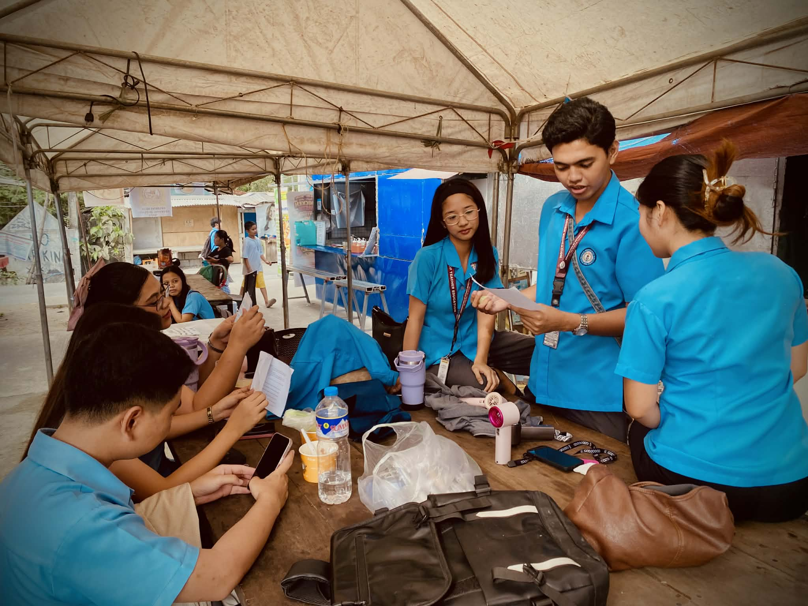

STORY - 'Group Collaborations’ Underneath a tent, a group of students in are busy. One man is explaining something from a paper to two attentive women. Another man is focused on his phone, while a woman beside him reading a books. It looks like a study session or a planning meeting, filled with collaboration and discussion.
1. What story does your photo tell? - It's about human interaction. You can see in the best photo I posted, they are in a circle in a group and they are meeting about their group projects.
2. Why did you choose this subject? - For me, this is the best photo of the ones I've photographed, so these are the subjects I chose. Besides that, I really feel the real interaction and collaboration they had while meeting about their project. The story of the photo is clearly visible and not forced, so I feel this is the most appropriate and meaningful one to show.
3. What elements such as lighting, composition, timing, & emotions make your photo effective? - For me i use Lighting and filters, like natural, and soft daylight. This makes details clear, highlights the vibrant blue color of their uniforms, and keeps the scene warm and approachable. Using Composition Framing and depth the shot is taken from a slightly low angle, which gives the subjects presence and emphasizes their interaction. In Balance the group is positioned to fill the frame and the background provides just enough context, without distracting from the main subject. In Overall, these elements work together to create an image that is visually appealing, tells a clear story, and evokes a human interaction.
4. What challenges did you encounter while taking the photo? It's hard to take pictures, especially when they're actually doing something, and as they say in street photography, there's inevitably a lot of people passing by, so it takes longer, so you have to take them quickly because it's embarrassing and distracts them from what they're doing, but on the other hand, even if I'm in a hurry, I make sure that the picture I take is neat and beautiful.
5. How can you improve your shot next time? - Maybe i need no pressure to take pictures, because I did it, I just pressed it continuously to take more pictures. I might be interfering with their studies or the things they're doing.